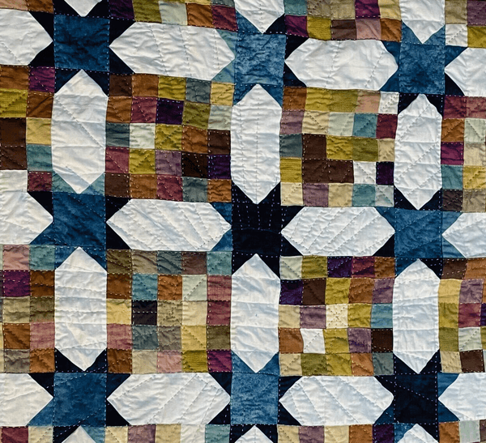
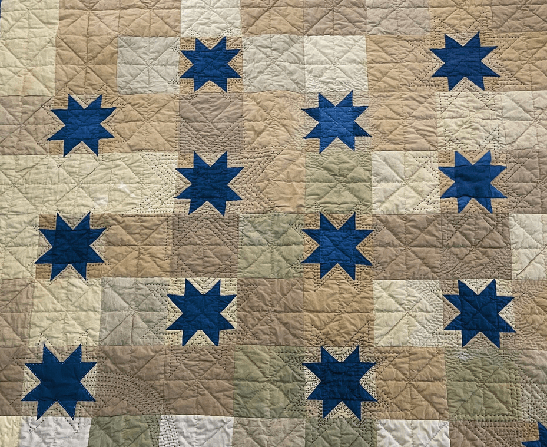

Why your voice matters
Hemp is a durable, sustainable textile with so much potential.
But we need your input to guide the future of hemp in quilting.
spa

Sustainable
Hemp is a low-impact crop that supports a healthier planet.

Durable & Beautiful
Strong fibers, soft textures, made to last in every stitch.

Made for Makers
Quilters like you are leading the way to a greener future.